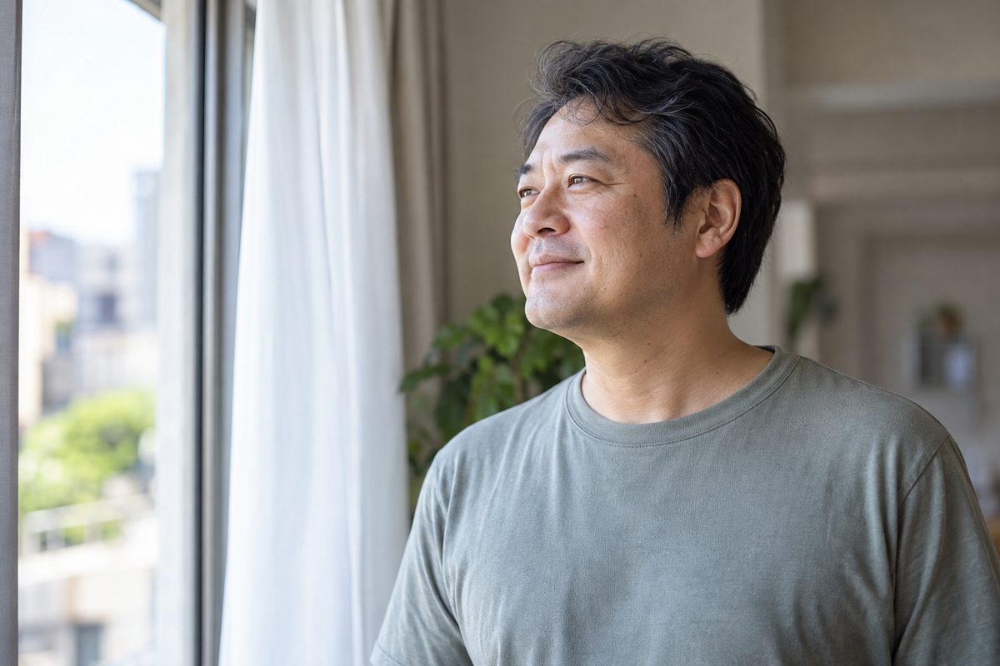
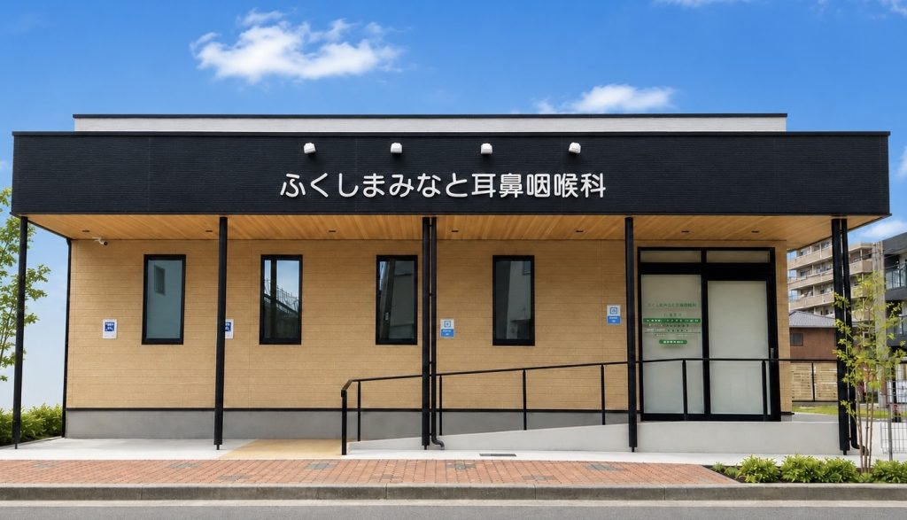
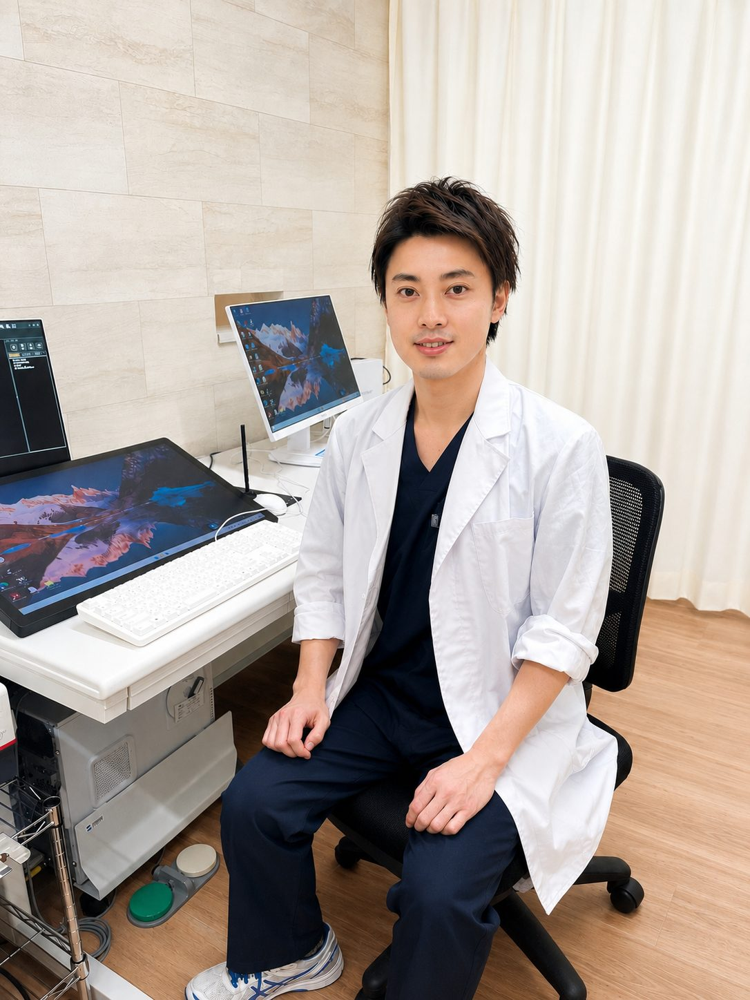

鼻とのどから、
原因を見つける
鼻づまりや扁桃の大きさなどを診察。必要に応じて内視鏡で確かめ、原因に合った治療へ。
港区で、いびき・睡眠時無呼吸の検査。

家族に「いびきがうるさい」「息が止まっていた」と言われた
7時間寝ても、朝から体が重い
会議中や運転中に、急に眠くなる
朝起きたとき、頭が痛い
太ってから、いびきが大きくなった
それ、
年齢や疲れのせいだと
見過ごしていませんか？
のどが狭くなり、いびきが出る眠ると、のどの筋肉がゆるみます。
ふさがると、呼吸が止まる空気が通りにくくなります。
朝のだるさ・日中の眠気に呼吸を戻そうとして、眠りが浅くなります。
閉塞性睡眠時無呼吸の仕組みを簡略化した模式図です。
いびきと昼間の眠気。
この2つにつながるのが、
睡眠時無呼吸症候群です。
治療で目指すのは、
夜だけでなく、朝も日中も楽に過ごせる毎日。
いびきを抑えて、
ご家族も休める静かな夜へ
だるさや頭痛を減らし、
すっきり目覚める朝へ
眠気を減らして、
仕事に集中できる毎日へ
睡眠中の呼吸を整え、
からだへの負担を減らすことも目指します。
治療効果には個人差があります。
まずは検査で、
いびきの原因を知ることから。
鼻づまりや扁桃の大きさなどを診察。必要に応じて内視鏡で確かめ、原因に合った治療へ。

平日は18:30まで、土日も診療。仕事帰りやお休みの日も、通院を続けやすい環境です。
港北駅 徒歩3分駐車場25台以上
約30秒の動画でわかる、4つのステップ
必要に応じて、
病院での精密検査（一泊）をご紹介します。
いびきだけなのか、無呼吸もあるのか。
睡眠中の呼吸を調べることから始めます。
| 当院の保険診療CPAPシーパップ | レーザー治療自由診療の照射治療 | |
|---|---|---|
| 費用 | 月額（3割負担）5,000〜6,000円保険適用の目安 適用基準あり | 総額（試算例）40万〜50万円1回約5万円 ×8〜10回の例 |
| 効果 | いびきの改善 無呼吸の改善 さらに日中の眠気 の改善高血圧・2型糖尿病の方の血圧・血糖管理にも改善報告※1 | いびきの改善 無呼吸の改善※3効果は治療法や適応によって異なります |
| 治療後 | 毎月、 医師が確認治療の状態や 使い心地を相談 | 治療後にいびきが 再発する場合も あります※2 |
レーザーは1回5万円×8〜10回の試算例です。実際の費用・回数は医院や治療法により異なります。
※1 無呼吸に高血圧・2型糖尿病を合併した方の研究による報告です。各疾患の治療は継続が必要です。
※2 再発の報告は一部のレーザー治療の研究によるものです。効果や再発には個人差があります。
※3 レーザーの無呼吸への効果は治療法・適応により異なります。
治療法は、検査の結果と
いびきの原因をもとに選びます。
費用の目安
保険診療・3割負担の方
金額は負担割合や診療内容によって変わります。
トラック・バス・タクシーなど
日中の眠気を、
見過ごさないために。
睡眠時無呼吸による眠気は、運転中の事故につながるおそれがあります。
会社の健診でいびきや眠気を指摘された方も、ご相談ください。
保険診療で、3割負担の方は3,000円ほどからです。初診料や診療内容により変わります。
小さな機器をつけて、いつもどおり寝ていただきます。睡眠中の呼吸の状態を調べる検査です。
ご自宅での検査は一晩です。
機器をご返却いただいた後、次の診察で医師が結果をご説明します。
症状の程度や原因に合わせて、CPAP、マウスピース、鼻の治療などをご提案します。
はい。ご家族にいびきを指摘された方も、お気軽にご相談ください。
使用を続けることで効果が得られる治療です。体重などの変化も踏まえ、治療の継続について診察で確認します。
当院では行っていません。まず検査でいびきの原因を調べ、保険で続けられる治療をご提案します。
はい。お子さんのいびきは、アデノイドや扁桃の大きさが関係することもあります。まずは診察で鼻とのどの状態を確認します。

ふくしまみなと
耳鼻咽喉科
院長福島 昌浩
耳鼻咽喉科専門医
港北駅 徒歩3分駐車場25台以上
| 月〜金 | 9:00〜12:0015:00〜18:30 |
|---|---|
| 土・日 | 9:00〜13:00 |
休診日：祝日
WEB受付は診療終了の30分前まで。